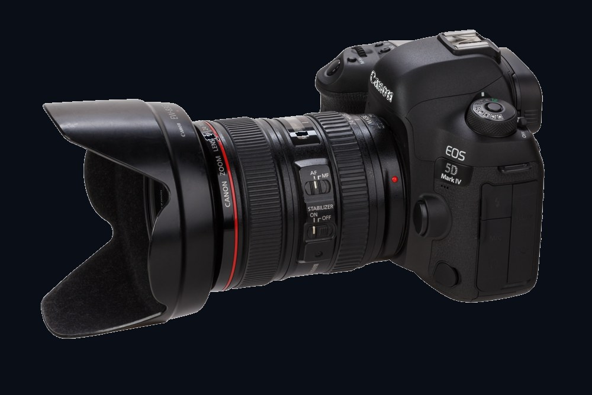
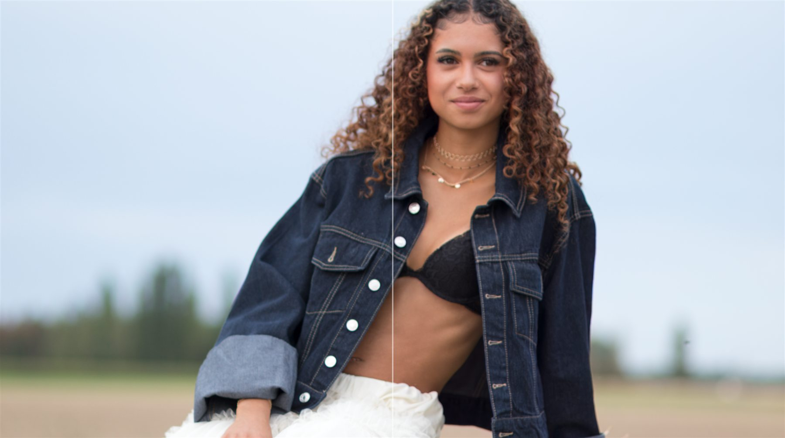

SAYSKO PHOTOGRAPHIE
Des portraits travaillés au flash, une lumière maîtrisée et des images qui racontent une histoire. Bienvenue dans mon studio.
VisiteQui suis-je

Spécialisé en photo de studio et en strobisme, je construis chaque image avec une lumière maîtrisée : flash, réflecteurs, ombres portées et contrastes travaillés pour donner du relief et du caractère au sujet.
Du réglage de l'éclairage à la retouche finale, chaque étape vise une seule chose : transformer une prise de vue en une image qui raconte une histoire.
Le matériel

Un Canon 5D Mark IV sur trépied, piloté depuis l'ordinateur en prise de vue connectée. Un seul flash déporté, une softbox, un réflecteur — et la lumière devient un langage.
Voir mes compétences Rejoindre le live 🎧La retouche

La prise de vue n'est que la moitié du chemin. La retouche révèle ce que l'œil a vu au moment du déclenchement : les couleurs, les contrastes, la texture de la peau.
De Lightroom à Capture One, chaque réglage sert une intention — jamais l'inverse.
Voir les tutorielsEntrez dans mon univers
Me contacter
Une collaboration, une commande ou simplement un bonjour ?
sayskothemix+contact@gmail.com